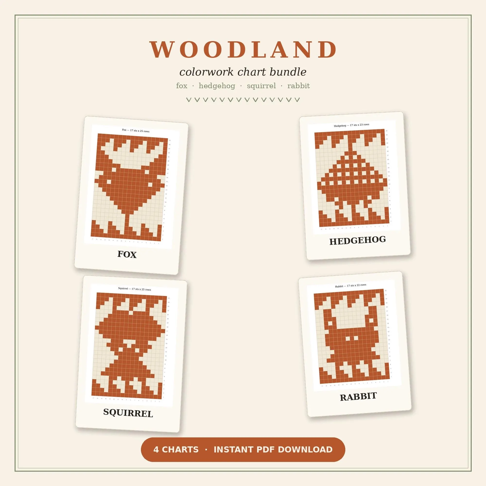
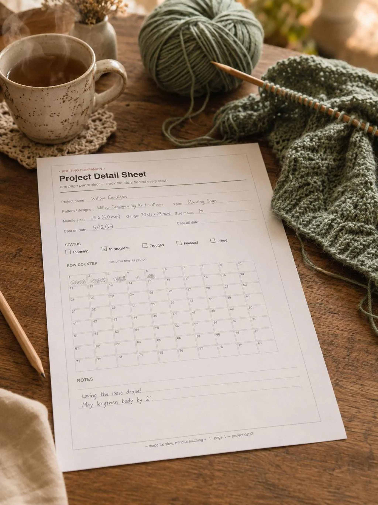
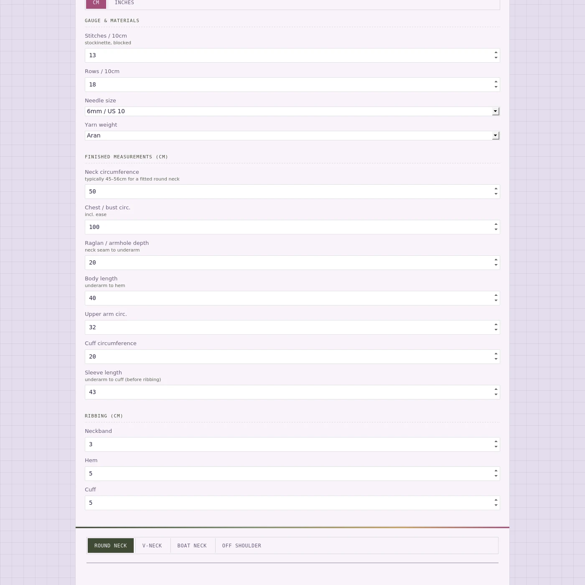

Plan your next top-down jumper with numbers based on your own swatch. Try the free stitch-count preview, then explore the full calculator for four neckline constructions, sleeve shaping and step-by-step instructions you can copy.
The maths, done. The knitting, yours.
£15 for the full version · One payment · No subscription · Stripe checkout
Example schematic showing the neckline options. This illustration does not update with the demo.
Free interactive knitting tool
Work out which pattern size gives you your intended chest measurement at your own gauge, before you cast on. Get the free Gauge Fixer link by email, plus occasional knitting tips and tool updates.
No email needed. Enter your washed swatch gauge, base neck opening, desired finished chest and raglan shaping depth. This preview shows basic yoke maths with increases every other round. It does not include the full calculator’s shaped round-neck start, centre-front join or picked-up neckband, and is not a knitting pattern.
🔒 Unlocked in the full version
Your swatch doesn't match the pattern? Get the right size, new stitch and row counts, and how much yarn to buy. Join the list and we'll email you the link.
Get it free by emailSwapping yarn? Check weight, yardage, drape and fibre in one go, and see how many skeins to buy.
Open Yarn SwapWork out how much yarn to buy by size, stitch pattern and yarn weight.
Open the Yarn EstimatorUse your washed stitch and row gauge in cm or inches, body measurements, ease and desired lengths. Read the calculated fit warnings before knitting.
Get cast-on and raglan counts, underarm stitches, body rounds, sleeve decrease schedules and ribbing instructions. Upper-arm measurements check the resulting sleeve fit.
Round neck starts flat with front-neck and raglan shaping, then adds centre-front stitches to join in the round; pick up its neckband last. V-neck has its own flat shaping. Boat neck starts in the round. Off-shoulder cast-on uses your around-shoulders measurement.
See a neckline-specific schematic with calculated garment measurements, then copy the step-by-step pattern as text to keep with your project.
The full calculator uses a straight body and equal front/back sections, without back-neck short rows. Round-neck flat rows default to 10 and can be adjusted; their depth depends on row gauge. Check fit before dividing, and check neckband pickup counts on the garment.
Yes. The calculator is only as accurate as your gauge, so measure stitches and rows per 10cm over a washed swatch.
It uses your measured gauge rather than a fixed yarn weight. Swatch first to check that you like the fabric. The raglan calculator does not estimate yarn quantities; use the separate Yarn Estimator for a starting estimate.
In the free preview, enter your finished chest measurement, including ease: a 96 cm chest plus 8 cm ease means 104 cm. In the full calculator, enter your chest measurement and ease separately.
A simplified raglan yoke breakdown using increases every other round. It shows base opening stitches, section counts at the divide, underarm stitches and calculated chest and yoke depth. It does not generate the full calculator’s round-neck shaping or check sleeve fit and neck stretch. The base opening count is not the shaped round-neck cast-on.
It is aimed at knitters comfortable reading pattern instructions, working raglan increases, dividing body and sleeves, and shaping sleeves. Round neck and V-neck also use flat knitting and picked-up neckbands. It provides the numbers and instructions rather than technique lessons.
Generate instructions for a straight-body top-down raglan with round neck, V-neck, boat neck or off-shoulder construction. Includes sleeve taper, ribbing, fit warnings, a measurement schematic and a pattern you can copy as text.

Fox, hedgehog, squirrel, and rabbit colorwork charts, ready to knit into your own projects.
Buy on Etsy
PDF trackers for knitting, sock, crochet, blanket, and amigurumi projects — print and go.
Buy on Etsy
The full calculator — turn your gauge and measurements into neckline-specific raglan instructions, sleeve shaping and a schematic.
Get the calculator — £15The Thread Within is a knitting and craft brand making digital tools and printable resources for makers, created by Piyi, a knitter who would rather spend more time making and less time redoing the maths.
Follow along on YouTube for more, in both English and Greek.